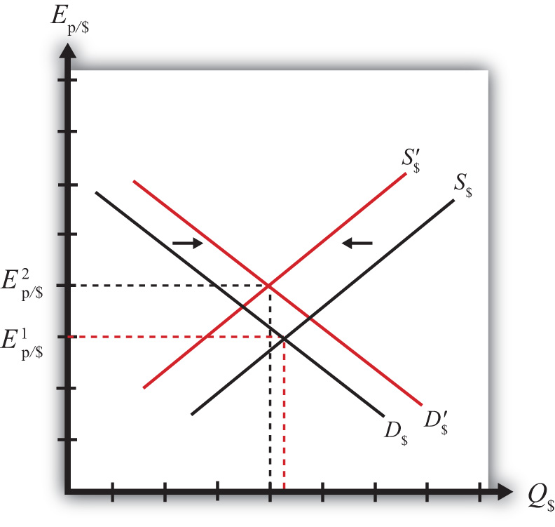
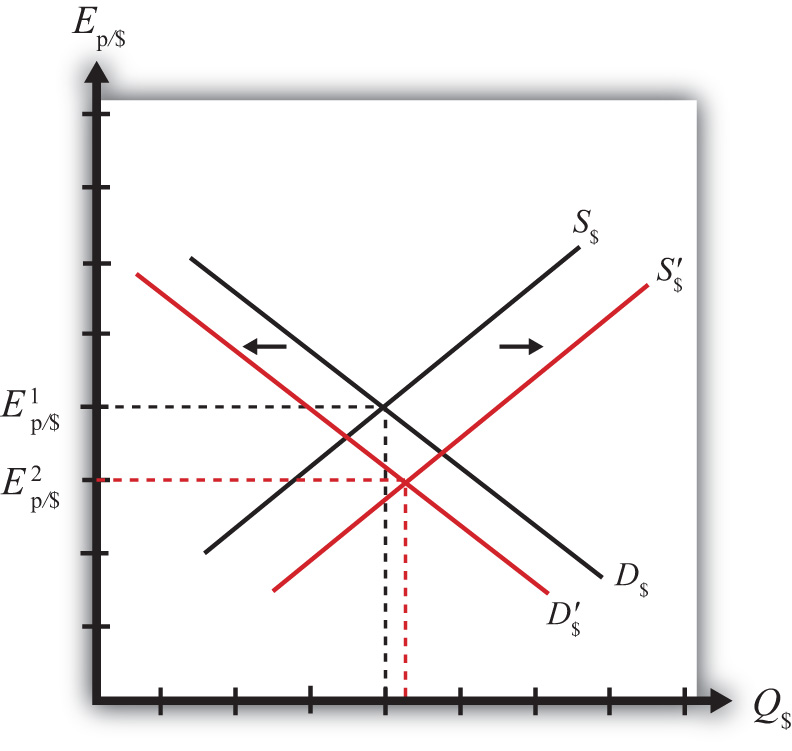

The purchasing power parity (PPP) relationship becomes a theory of exchange rate determination by introducing assumptions about the behavior of importers and exporters in response to changes in the relative costs of national market baskets. Recall the story of the law of one price, when the price of a good differed between two countries’ markets and there was an incentive for profit-seeking individuals to buy the good in the low price market and resell it in the high price market. Similarly, if a market basket containing many different goods and services costs more in one market than another, we should likewise expect profit-seeking individuals to buy the relatively cheaper goods in the low-cost market and resell them in the higher-priced market. If the law of one price leads to the equalization of the prices of a good between two markets, then it seems reasonable to conclude that PPP, describing the equality of market baskets across countries, should also hold.
However, adjustment within the PPP theory occurs with a twist compared to adjustment in the law of one price story. In the law of one price story, goods arbitrage in a particular product was expected to affect the prices of the goods in the two markets. The twist that’s included in the PPP theory is that arbitrage, occurring across a range of goods and services in the market basket, will affect the exchange rate rather than the market prices.
To see why the PPP relationship represents an equilibrium, we need to tell an equilibrium story. An equilibrium story in an economic model is an explanation of how the behavior of individuals will cause the equilibrium condition to be satisfied. The equilibrium condition is the PPP equation written as
The endogenous variable in the PPP theory is the exchange rate. Thus we need to explain why the exchange rate will change if it is not in equilibrium. In general there are always two versions of an equilibrium story, one in which the endogenous variable (Ep/$ here) is too high and one in which it is too low.
PPP equilibrium story 1. Let’s consider the case in which the exchange rate is too low to be in equilibrium. This means that
where Ep/$ is the exchange rate that prevails on the spot market. Since it is less than the ratio of the market basket costs in Mexico and the United States, it is also less than the PPP exchange rate. The right side of the expression is rewritten to show that the cost of a market basket in the United States evaluated in pesos (i.e., CB$Ep/$) is less than the cost of the market basket in Mexico also evaluated in pesos. Thus it is cheaper to buy the basket in the United States, or in other words, it is more profitable to sell items in the market basket in Mexico.
The PPP theory now suggests that the cheaper basket in the United States will lead to an increase in demand for goods in the U.S. market basket by Mexico. As a consequence, it will increase the demand for U.S. dollars on the foreign exchange (Forex) market. Dollars are needed because purchases of U.S. goods require U.S. dollars. Alternatively, U.S. exporters will realize that goods sold in the United States can be sold at a higher price in Mexico. If these goods are sold in pesos, the U.S. exporters will want to convert the proceeds back to dollars. Thus there is an increase in U.S. dollar demand (by Mexican importers) and an increase in peso supply (by U.S. exporters) on the Forex. This effect is represented by a rightward shift in the U.S. dollar demand curve in Figure 17.1 "Forex Adjustment When ". At the same time, U.S. consumers will reduce their demand for the pricier Mexican goods. This will reduce the supply of dollars (in exchange for pesos) on the Forex, which is represented by a leftward shift in the U.S. dollar supply curve in the Forex market.
Figure 17.1 Forex Adjustment When Ep/$ Is Low
Both the shift in demand and supply will cause an increase in the value of the dollar and thus the exchange rate (Ep/$) will rise. As long as the U.S. market basket remains cheaper, excess demand for the dollar will persist and the exchange rate will continue to rise. The pressure for change ceases once the exchange rate rises enough to equalize the cost of market baskets between the two countries and PPP holds.
PPP equilibrium story 2. Now let’s consider the other equilibrium story (i.e., the case in which the exchange rate is too high to be in equilibrium). This implies that
The left-side expression says that the spot exchange rate is greater than the ratio of the costs of market baskets between Mexico and the United States. In other words, the exchange rate is above the PPP exchange rate. The right-side expression says that the cost of a U.S. market basket, converted to pesos at the current exchange rate, is greater than the cost of a Mexican market basket in pesos. Thus, on average, U.S. goods are relatively more expensive while Mexican goods are relatively cheaper.
The price discrepancies should lead consumers in the United States or importing firms to purchase less expensive goods in Mexico. To do so, they will raise the supply of dollars in the Forex in exchange for pesos. Thus the supply curve of dollars will shift to the right as shown in Figure 17.2 "Forex Adjustment When ". At the same time, Mexican consumers would refrain from purchasing the more expensive U.S. goods. This would lead to a reduction in demand for dollars in exchange for pesos on the Forex. Hence, the demand curve for dollars shifts to the left. Due to the demand decrease and the supply increase, the exchange rate (Ep/$) falls. This means that the dollar depreciates and the peso appreciates.
Figure 17.2 Forex Adjustment When Ep/$ Is High
Extra demand for pesos will continue as long as goods and services remain cheaper in Mexico. However, as the peso appreciates (the dollar depreciates), the cost of Mexican goods rises relative to U.S. goods. The process ceases once the PPP exchange rate is reached and market baskets cost the same in both markets.
In the PPP theory, exchange rate changes are induced by changes in relative price levels between two countries. This is true because the quantities of the goods are always presumed to remain fixed in the market baskets. Therefore, the only way that the cost of the basket can change is if the goods’ prices change. Since price level changes represent inflation rates, this means that differential inflation rates will induce exchange rate changes according to the theory.
If we imagine that a country begins with PPP, then the inequality given in equilibrium story 1, can arise if the price level rises in Mexico (peso inflation), if the price level falls in the United States (dollar deflation), or if Mexican inflation is more rapid than U.S. inflation. According to the theory, the behavior of importers and exporters would now induce a dollar appreciation and a peso depreciation. In summary, an increase in Mexican prices relative to the change in U.S. prices (i.e., more rapid inflation in Mexico than in the United States) will cause the dollar to appreciate and the peso to depreciate according to the purchasing power parity theory.
Similarly, if a country begins with PPP, then the inequality given in equilibrium story 2, can arise if the price level rises in the United States (dollar inflation), the price level falls in Mexico (peso deflation), or if U.S. inflation is more rapid than Mexican inflation. In this case, the inequality would affect the behavior of importers and exporters and induce a dollar depreciation and peso appreciation. In summary, more rapid inflation in the United States would cause the dollar to depreciate while the peso would appreciate.
Jeopardy Questions. As in the popular television game show, you are given an answer to a question and you must respond with the question. For example, if the answer is “a tax on imports,” then the correct question is “What is a tariff?”